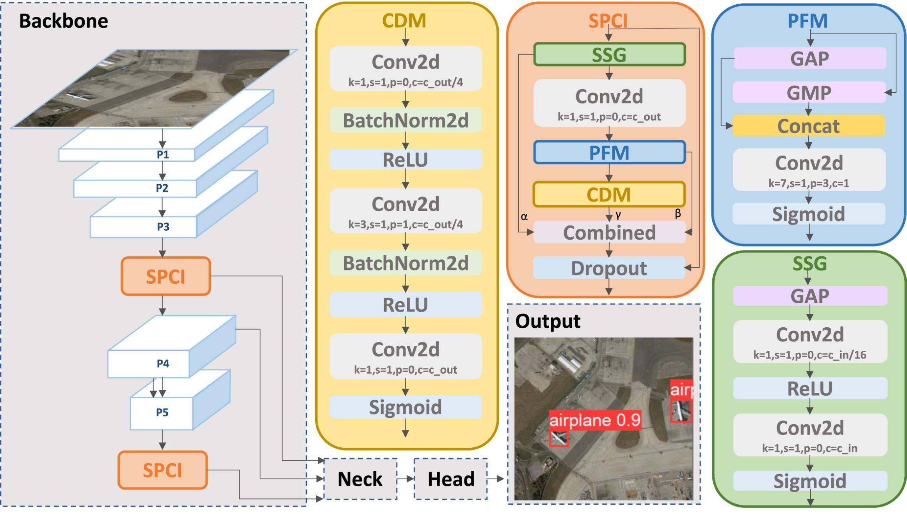

MUST
Macau University of Science and Technology
Ph.D. in Artificial Intelligence
Faculty of Innovation Engineering
Supervisor: KinTak U
I am a Ph.D. student in Artificial Intelligence at the Macau University of Science and Technology, within the Faculty of Innovation Engineering, supervised by KinTak U.
My research interests lie in computer vision, with a particular focus on object detection in remote sensing imagery. My work explores how visual representations and detection architectures can better capture small objects in complex scenes.

Engineering Applications of Artificial Intelligence
Volume 165, Part A · Article 113416
Ph.D. in Artificial Intelligence
Faculty of Innovation Engineering
Supervisor: KinTak U
M.S. in Information Technology
Faculty of Innovation Engineering
Supervisor: KinTak U
B.Eng. in Internet of Things Engineering
School of Electronics and Information Engineering
Supervisor: Decheng Xu
Project Assistant · Project Department
Technical Intern
Technical Intern
National Third Prize · East China Regional First Prize
Jiangsu Provincial Third Prize
Outside research, I enjoy paddling. I placed 10th in Open WSS-1 (22 km), with a finishing time of 03:36:09.50, at the 2026 event in Haikou: the 6th Asian Canoe Ocean Racing Championships cum China International Canoe Ocean Open.